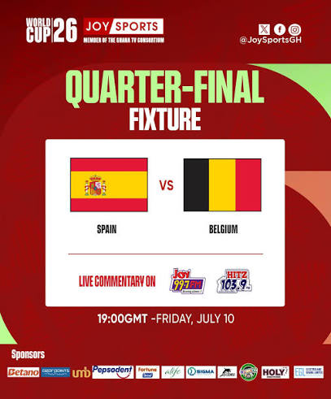

ZABSPORTS LIVE
HOME PAGE
Sports Live HD Player ⛳
EVERY MATCH , EVERY LANGUAGE , JUST A CLICK AWAY
ARGENTINA VS ENGLAND MATCH LIVE INFO

ABOUT THE MATCH
Argentina and England faced off today in the FIFA World Cup 2026 semi-final at Atlanta Stadium, delivering one of the most anticipated clashes of the tournament. The match carried immense historical weight, as both nations share a fierce football rivalry dating back decades. Argentina, led by Lionel Messi in dazzling form, looked to secure back-to-back World Cup final appearances after their triumph in Qatar 2022. England, driven by captain Harry Kane and the brilliance of Jude Bellingham, were determined to end their long wait for a final since 1966. The atmosphere inside the stadium was electric, with fans from both sides creating a sea of blue and white against red and white. Both teams fought with intensity, trading chances and showcasing world-class skill. Argentina’s attacking flair tested England’s defense, while England’s midfield pressed hard to break through. The stakes could not have been higher, as the winner earned the right to face Spain in the grand final on July 19 in New York. The contest embodied passion, drama, and the spirit of the World Cup, leaving fans across the globe glued to their screens. This semi-final will be remembered as another chapter in the storied rivalry between Argentina and England.
ARGENTINA
Argentina entered the semi-final with the confidence of reigning champions, determined to prove that their triumph in Qatar 2022 was no accident. Lionel Messi, still the heartbeat of the team, inspired his teammates with dazzling skill and leadership. Alongside him, young talents like Julián Álvarez and Enzo Fernández added energy and creativity, ensuring Argentina remained a dangerous attacking force. Their journey through the tournament showcased resilience, tactical discipline, and flashes of brilliance that reminded fans why Argentina is considered one of football’s greatest nations.
ENGLAND
England came into the clash with a renewed sense of purpose, eager to end their long wait for a World Cup final appearance since 1966. Under the guidance of coach Thomas Tuchel, the Three Lions blended youthful flair with experienced leadership. Harry Kane’s clinical finishing and Jude Bellingham’s dynamic midfield play have been central to England’s success, while their defense has shown strength against world-class opposition. The team’s spirit, determination, and tactical evolution have made them serious contenders, and their fans believe this could finally be the year England returns to the pinnacle of world football.
Win Probability
| ARGENTINA VS ENGLAND | |
|---|---|
| MATCH | SCHEDULE |
| MATCH | ARGENTINA VS ENGLAND |
| DATE | 16-07-2026 |
| TIME | 12:30 AM IST |
| STADIUM | ATLANTA STADIUM |
| WATCH LIVE | |